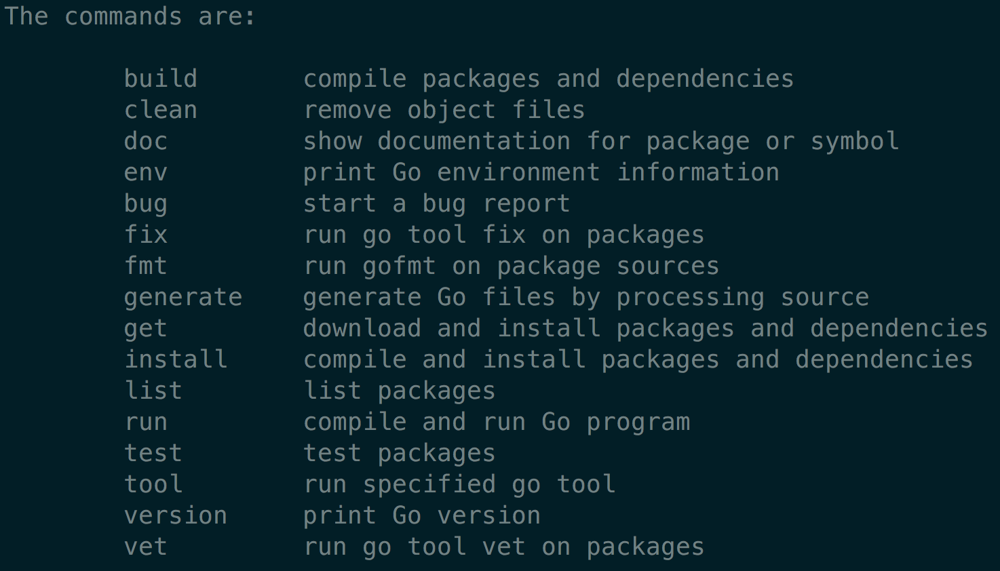
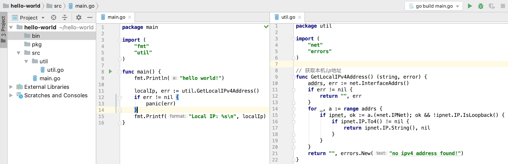
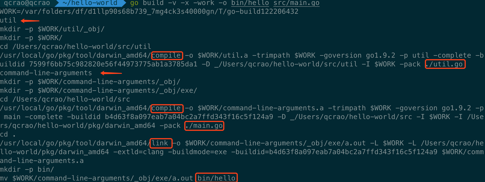
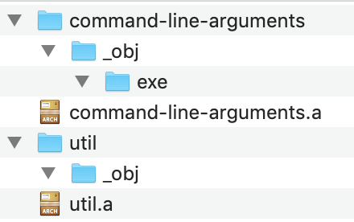
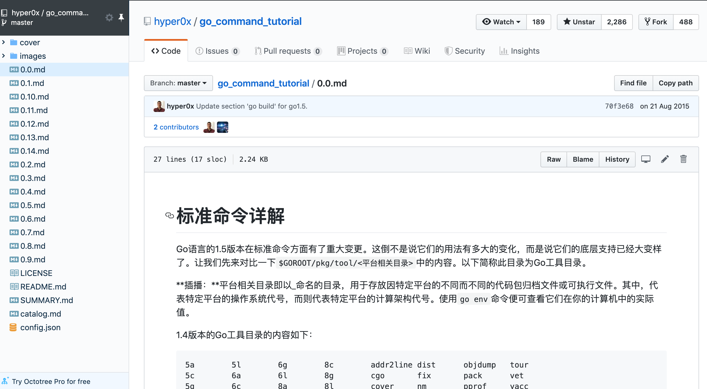
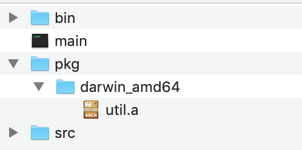
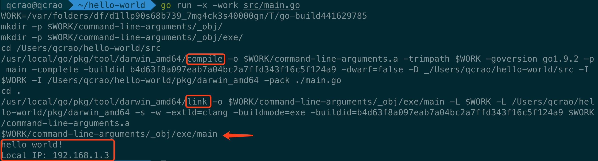
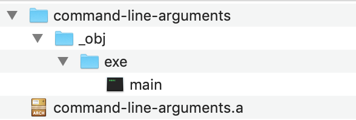

直接在终端执行：
|
|
就能得到和 go 相关的命令简介：

和编译相关的命令主要是：
|
|
go build #
go build 用来编译指定 packages 里的源码文件以及它们的依赖包，编译的时候会到 $GoPath/src/package 路径下寻找源码文件。go build 还可以直接编译指定的源码文件，并且可以同时指定多个。
通过执行 go help build 命令得到 go build 的使用方法：
|
|
-o 只能在编译单个包的时候出现，它指定输出的可执行文件的名字。
-i 会安装编译目标所依赖的包，安装是指生成与代码包相对应的 .a 文件，即静态库文件（后面要参与链接），并且放置到当前工作区的 pkg 目录下，且库文件的目录层级和源码层级一致。
至于 build flags 参数，build, clean, get, install, list, run, test 这些命令会共用一套：
| 参数 | 作用 |
|---|---|
| -a | 强制重新编译所有涉及到的包，包括标准库中的代码包，这会重写 /usr/local/go 目录下的 .a 文件 |
| -n | 打印命令执行过程，不真正执行 |
| -p n | 指定编译过程中命令执行的并行数，n 默认为 CPU 核数 |
| -race | 检测并报告程序中的数据竞争问题 |
| -v | 打印命令执行过程中所涉及到的代码包名称 |
| -x | 打印命令执行过程中所涉及到的命令，并执行 |
| -work | 打印编译过程中的临时文件夹。通常情况下，编译完成后会被删除 |
我们知道，Go 语言的源码文件分为三类：命令源码、库源码、测试源码。
命令源码文件：是 Go 程序的入口，包含
func main()函数，且第一行用package main声明属于 main 包。
库源码文件：主要是各种函数、接口等，例如工具类的函数。
测试源码文件：以
_test.go为后缀的文件，用于测试程序的功能和性能。
注意，go build 会忽略 *_test.go 文件。
我们通过一个很简单的例子来演示 go build 命令。我用 Goland 新建了一个 hello-world 项目（为了展示引用自定义的包，和之前的 hello-world 程序不同），项目的结构如下：

最左边可以看到项目的结构，包含三个文件夹：bin，pkg，src。其中 src 目录下有一个 main.go，里面定义了 main 函数，是整个项目的入口，也就是前面提过的所谓的命令源码文件；src 目录下还有一个 util 目录，里面有 util.go 文件，定义了一个可以获取本机 IP 地址的函数，也就是所谓的库源码文件。
中间是 main.go 的源码，引用了两个包，一个是标准库的 fmt；一个是 util 包，util 的导入路径是 util。所谓的导入路径是指相对于 Go 的源码目录 $GoRoot/src 或者 $GoPath/src 的下的子路径。例如 main 包里引用的 fmt 的源码路径是 /usr/local/go/src/fmt，而 util 的源码路径是 /Users/qcrao/hello-world/src/util，正好我们设置的 GoPath = /Users/qcrao/hello-world。
最右边是库函数的源码，实现了获取本机 IP 的函数。
在 src 目录下，直接执行 go build 命令，在同级目录生成了一个可执行文件，文件名为 src，使用 ./src 命令直接执行，输出：
|
|
我们也可以指定生成的可执行文件的名称：
|
|
这样，在 bin 目录下会生成一个可执行文件，运行结果和上面的 src 一样。
其实，util 包可以单独被编译。我们可以在项目根目录下执行：
|
|
编译程序会去 $GoPath/src 路径找 util 包（其实是找文件夹）。还可以在 ./src/util 目录下直接执行 go build 编译。
当然，直接编译库源码文件不会生成 .a 文件，因为：
go build 命令在编译只包含库源码文件的代码包（或者同时编译多个代码包）时，只会做检查性的编译，而不会输出任何结果文件。
为了展示整个编译链接的运行过程，我们在项目根目录执行如下的命令：
|
|
-v 会打印所编译过的包名字，-x 打印编译期间所执行的命令，-work 打印编译期间生成的临时文件路径，并且编译完成之后不会被删除。
执行结果：

从结果来看，图中用箭头标注了本次编译过程涉及 2 个包：util，command-line-arguments。第二个包比较诡异，源码里根本就没有这个名字好吗？其实这是 go build 命令检测到 [packages] 处填的是一个 .go 文件，因此创建了一个虚拟的包：command-line-arguments。
同时，用红框圈出了 compile, link，也就是先编译了 util 包和 main.go 文件，分别得到 .a 文件，之后将两者进行链接，最终生成可执行文件，并且移动到 bin 目录下，改名为 hello。
另外，第一行显示了编译过程中的工作目录，此目录的文件结构是：

可以看到，和 hello-world 目录的层级基本一致。command-line-arguments 就是虚拟的 main.go 文件所处的包。exe 目录下的可执行文件在最后一步被移动到了 bin 目录下，所以这里是空的。
整体来看，go build 在执行时，会先递归寻找 main.go 所依赖的包，以及依赖的依赖，直至最底层的包。这里可以是深度优先遍历也可以是宽度优先遍历。如果发现有循环依赖，就会直接退出，这也是经常会发生的循环引用编译错误。
正常情况下，这些依赖关系会形成一棵倒着生长的树，树根在最上面，就是 main.go 文件，最下面是没有任何其他依赖的包。编译器会从最左的节点所代表的包开始挨个编译，完成之后，再去编译上一层的包。
这里，引用郝林老师几年前在 github 上发表的 go 命令教程，可以从参考资料找到原文地址。
从代码包编译的角度来说，如果代码包 A 依赖代码包 B，则称代码包 B 是代码包 A 的依赖代码包（以下简称依赖包），代码包 A 是代码包 B 的触发代码包（以下简称触发包）。
执行
go build命令的计算机如果拥有多个逻辑 CPU 核心，那么编译代码包的顺序可能会存在一些不确定性。但是，它一定会满足这样的约束条件：依赖代码包 -> 当前代码包 -> 触发代码包。
顺便推荐一个浏览器插件 Octotree，在看 github 项目的时候，此插件可以在浏览器里直接展示整个项目的文件结构，非常方便：

到这里，你一定会发现，对于 hello-wrold 文件夹下的 pkg 目录好像一直没有涉及到。
其实，pkg 目录下面应该存放的是涉及到的库文件编译后的包，也就是一些 .a 文件。但是 go build 执行过程中，这些 .a 文件放在临时文件夹中，编译完成后会被直接删掉，因此一般不会用到。
前面我们提到过，在 go build 命令里加上 -i 参数会安装这些库文件编译的包，也就是这些 .a 文件会放到 pkg 目录下。
在项目根目录执行 go build -i src/main.go 后，pkg 目录里增加了 util.a 文件：

darwin_amd64 表示的是：
GOOS 和 GOARCH。这两个环境变量不用我们设置，系统默认的。
GOOS 是 Go 所在的操作系统类型，GOARCH 是 Go 所在的计算架构。
Mac 平台上这个目录名就是 darwin_amd64。
生成了 util.a 文件后，再次编译的时候，就不会再重新编译 util.go 文件，加快了编译速度。
同时，在根目录下生成了名称为 main 的可执行文件，这是以 main.go 的文件名命令的。
hello-world 这个项目的代码已经上传到了 github 项目 Go-Questions，这个项目由问题导入，企图串连 Go 的所有知识点，正在完善，期待你的 star。 地址见参考资料【Go-Questions hello-world项目】。
go install #
go install 用于编译并安装指定的代码包及它们的依赖包。相比 go build，它只是多了一个“安装编译后的结果文件到指定目录”的步骤。
还是使用之前 hello-world 项目的例子，我们先将 pkg 目录删掉，在项目根目录执行：
|
|
两者都会在根目录下新建一个 pkg 目录，并且生成一个 util.a 文件。
并且，在执行前者的时候，会在 GOBIN 目录下生成名为 main 的可执行文件。
所以，运行 go install 命令，库源码包对应的 .a 文件会被放置到 pkg 目录下，命令源码包生成的可执行文件会被放到 GOBIN 目录。
go install 在 GoPath 有多个目录的时候，会产生一些问题，具体可以去看郝林老师的 Go 命令教程，这里不展开了。
go run #
go run 用于编译并运行命令源码文件。
在 hello-world 项目的根目录，执行 go run 命令：
|
|
-x 可以打印整个过程涉及到的命令，-work 可以看到临时的工作目录：

从上图中可以看到，仍然是先编译，再连接，最后直接执行，并打印出了执行结果。
第一行打印的就是工作目录，最终生成的可执行文件就是放置于此：

main 就是最终生成的可执行文件。